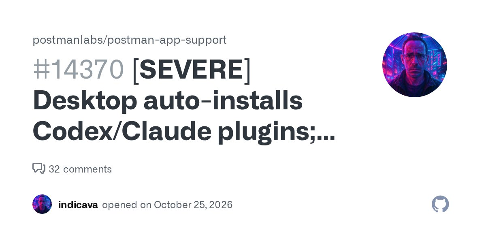

头条 一
OpenAI：ChatGPT 的搜索查询量约为谷歌的 20%
OpenAI 的 ChatGPT 消费者产品负责人亚当·弗莱周一在发布会上称，ChatGPT 的搜索查询量约相当于谷歌的 20%。OpenAI 把“触发网页搜索的查询”算作搜索，不含释义、简单问答；谷歌的对比数字未说明来源。
这是 OpenAI 自报口径，不是第三方统计。Verge 提到，微软 CEO 2023 年作证时称必应份额约 3%，一对比，20% 的分量就出来了。
来源：The Verge
ChatGPT 搜索量、Postman 自动装插件、Astra 实验被指误导
OpenAI 称 ChatGPT 搜索量约为谷歌的 20%；Postman 被指自动给 Codex 和 Claude Code 装插件；昨天的 Astra 改权重实验，被指并非只看原始权重。
OpenAI 的 ChatGPT 消费者产品负责人亚当·弗莱周一在发布会上称，ChatGPT 的搜索查询量约相当于谷歌的 20%。OpenAI 把“触发网页搜索的查询”算作搜索，不含释义、简单问答；谷歌的对比数字未说明来源。
这是 OpenAI 自报口径，不是第三方统计。Verge 提到，微软 CEO 2023 年作证时称必应份额约 3%，一对比，20% 的分量就出来了。

一位用户在 Postman 的 GitHub 仓库提交 issue，称桌面版 12.33.4 在他打开后，日志里出现 auto-existing-upgrade，随后 Codex 与 Claude Code 被装上 Postman 插件，Codex 还加入启动钩子和远程 MCP 连接。
作者明说没有证据显示数据外传，也未在干净的 Mac 上复现。issue 已有上百个赞同，Hacker News 上 960 分，读到的页面里未见 Postman 官方答复。
Honnibal 发文称，MIT 研究者那篇“只看原始权重”的说法只对部分实验成立：只在 17K 到 172K 参数的小网络上成立；Qwen 的 7.9% 到 48.1% 实验用了 Python，还让模型跑了最多 50 批练习题。
这不推翻结果，只是缩小含义：模型更像一位会写分析脚本的工程师。文中称同样做法在 Gemma 3 270M 上没有效果。
只读标题，具体范围待核。
AI 与搜索被绑在一起，只读标题。
称 8GB 内存也能入门，只读标题。
按心情推荐，只读标题。
开源，称无部署计划，早期研究。
据路透援引知情人士，待核。
与标准 sudo 行为不同，只读标题。
本地小模型的对照，Astra 之外的参照。
推理服务需求在涨，只读标题。
Reddit 转述，非一手，待核。
面向代理的电脑操作命令行，只看榜单。
只读标题，口径待核。
ChatGPT 搜索占谷歌 20% 听着很大，但分子由 OpenAI 自己定义，分母来源没讲。数字能当风向，不能当战绩。
Postman 这件事的要点是授权边界：一个 API 工具改写你另一个工具的全局配置。最该问的是谁同意过，而不是它好不好用。
Astra 的故事从“模型读懂权重”缩成了“模型会写分析脚本”。能力没有变小，只是叙述变准了，这种修正往往比首发更值得读。